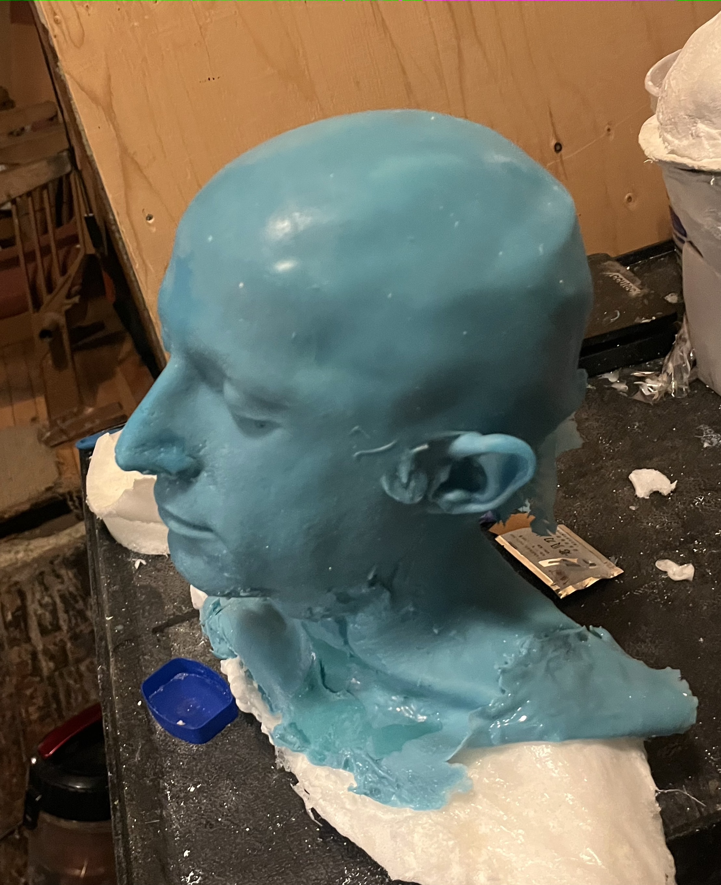
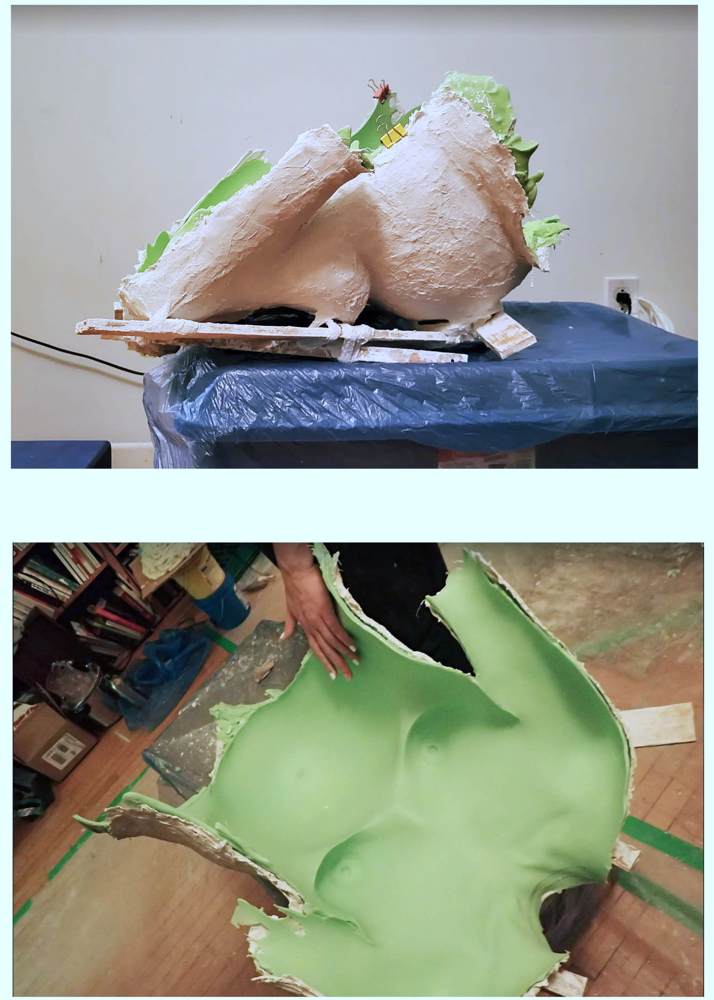

Moulages corporels partiels
Avant d’aborder le moulage corporel complet, on a réalisé des moulages corporels partiels, incluant un tête, un torse, un ventre enceint, une jambe et un bras.



Le ventre de Morgane